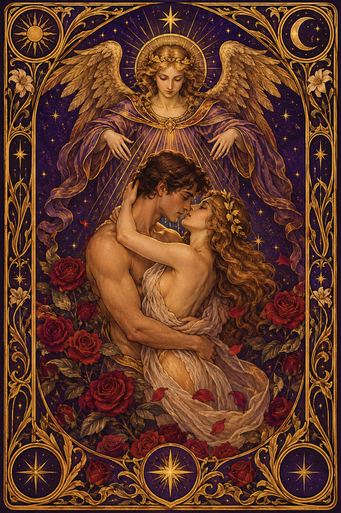
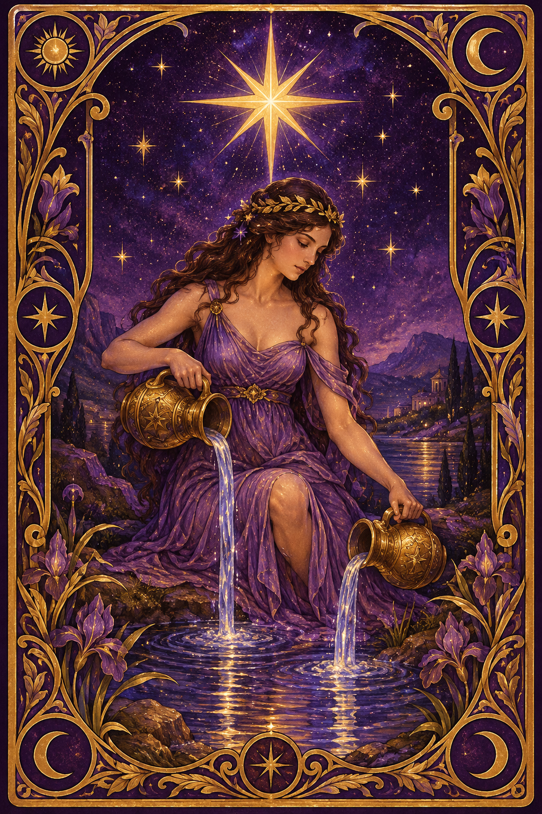
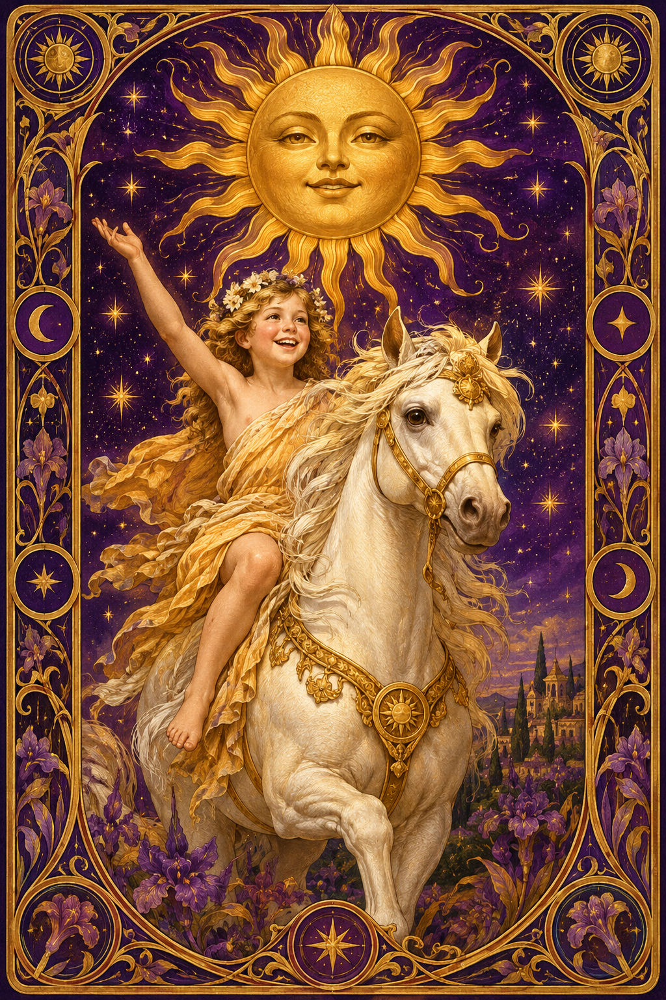
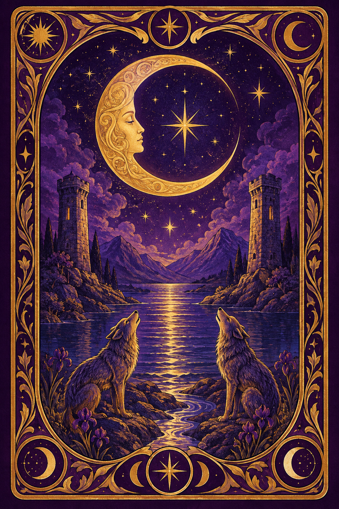
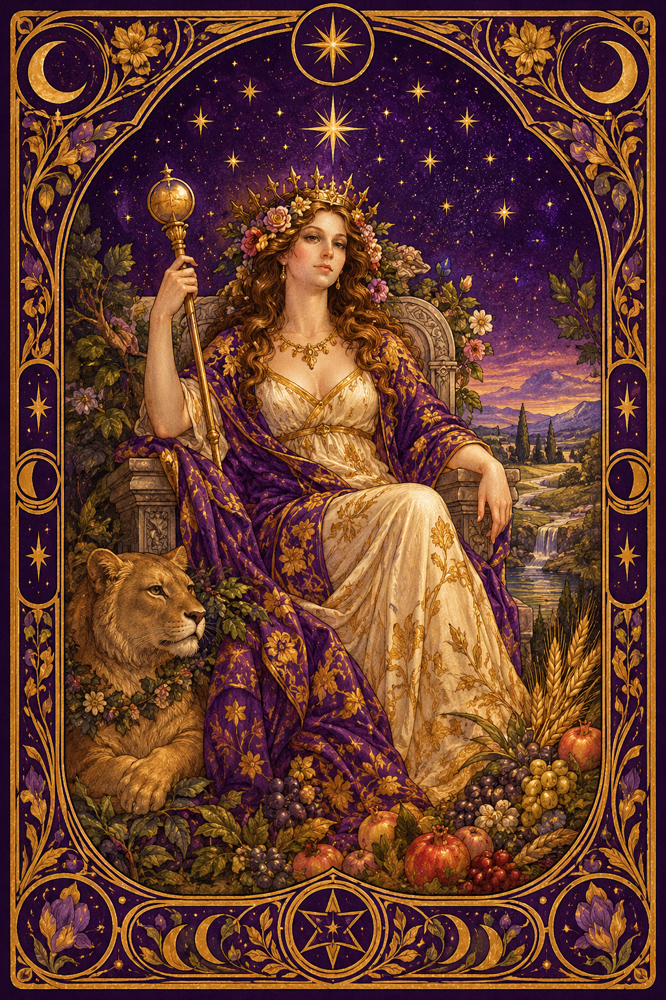
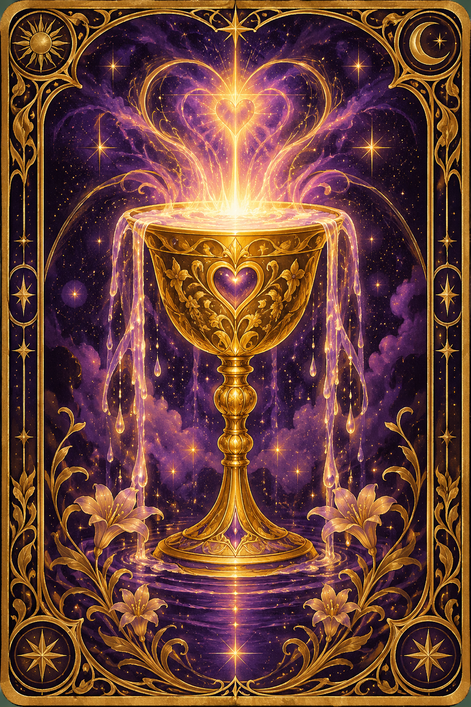
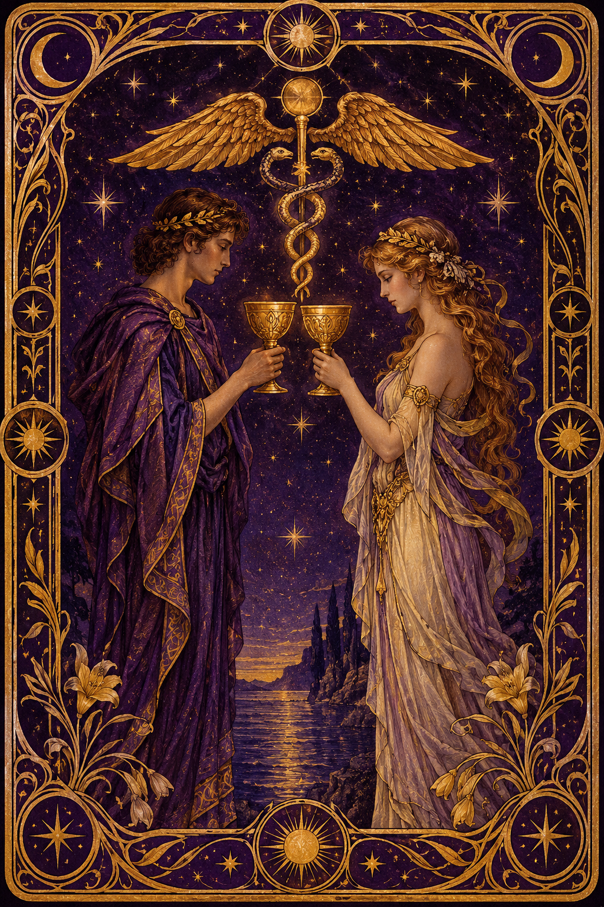
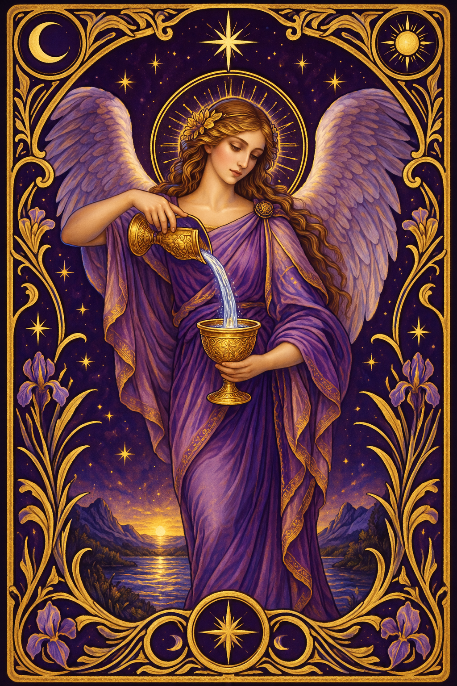
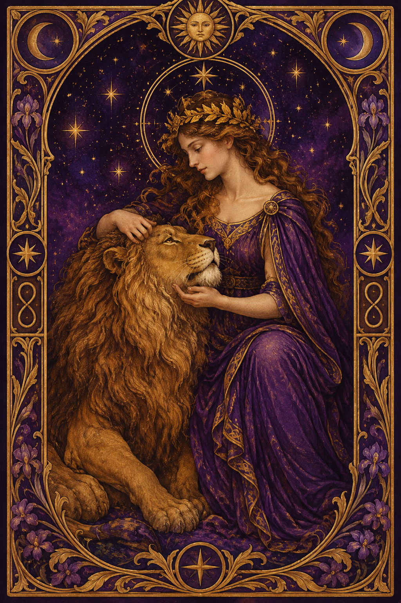
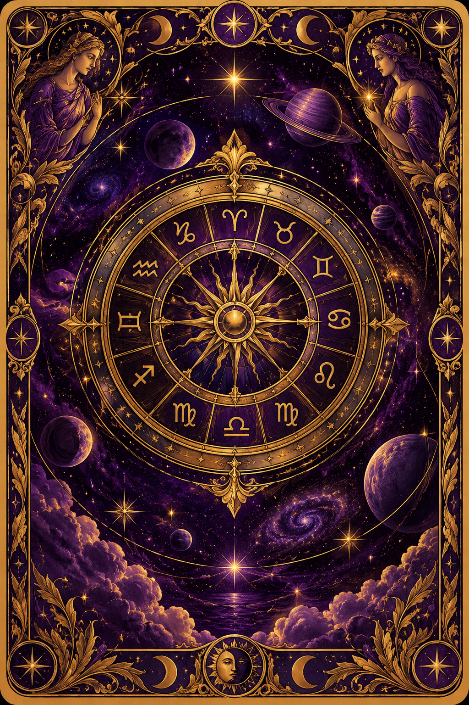

Lettura Anima Gemella
La tua guida completa ai Tarocchi dell'Amore
La tua guida completa ai Tarocchi dell'Amore
Questa lettura dei Tarocchi dell'Amore è stata creata appositamente per te, basandosi sulle energie che hai attirato durante il quiz. La carta che hai scelto non è stata una coincidenza: è stata un richiamo della tua anima, un messaggio dall'universo che ora sei pronta a ricevere.
Ogni carta racchiude un significato profondo sulla tua vita sentimentale, sul tipo di anima gemella che ti sta cercando, e sul percorso che dovrai intraprendere per riconoscerla quando apparirà davanti a te.

Gli Amanti rappresentano la forma più pura di connessione tra due anime. Se questa carta ti ha chiamata, significa che l'universo sta già orchestrando l'incontro con la tua anima gemella. Non si tratta di un amore qualunque: è una connessione che trascende il tempo e lo spazio, un legame che le vostre anime hanno stretto molto prima di questa vita terrena.
Questa carta ti dice che sei pronta. Hai fatto il lavoro interiore necessario, anche se forse non te ne rendi conto. Le esperienze passate, anche quelle dolorose, ti hanno preparata per questo momento di apertura totale.
La persona destinata a te è qualcuno che riconoscerai a livello istintivo. Non sarà un fuoco d'artificio esplosivo — sarà piuttosto una sensazione di ritorno a casa. Quando i vostri sguardi si incroceranno, sentirai una familiarità inspiegabile, come se vi foste già conosciuti in un'altra dimensione.
Questa persona condivide con te valori profondi, anche se in superficie potreste sembrare molto diversi. È nella profondità delle conversazioni notturne, nei silenzi condivisi senza imbarazzo, che riconoscerai il legame.
Nei prossimi mesi, presta attenzione ai segni: numeri ricorrenti (soprattutto l'11:11), sogni vividi in cui senti una presenza amorevole, e sincronicità che sembrano troppo precise per essere casuali. L'universo ti sta guidando, ma devi rimanere aperta e ricettiva.
Il consiglio più importante: non accontentarti di meno di quello che meriti. Gli Amanti ti ricordano che l'amore vero non richiede che tu rinunci a te stessa. Anzi, con la persona giusta, diventerai ancora più te stessa.

La Stella è la carta della speranza rinnovata dopo un periodo di oscurità. Se ti ha chiamata, significa che stai emergendo da un ciclo di delusioni amorose o di solitudine che ti ha fatto dubitare dell'amore. Ma ora, una luce nuova sta sorgendo nel tuo cielo sentimentale.
Questa carta è tra le più potenti per la lettura dell'anima gemella: indica che il destino ha già scritto il vostro incontro nelle stelle. Non è questione di "se", ma di "quando".
La persona che l'universo ha scelto per te è qualcuno che porta luce nella vita degli altri. Potrebbe essere un artista, un guaritore, qualcuno che lavora con le persone, o semplicemente una persona la cui gentilezza illumina ogni stanza in cui entra.
Vi riconoscerete attraverso un senso di pace profonda. Dove altre relazioni portavano ansia e incertezza, questa porterà una calma che non hai mai provato prima. Sentirai di poter essere completamente vulnerabile senza paura.
La Stella ti chiede di coltivare la fede — non in senso religioso, ma la fiducia profonda che tutto si sta muovendo nella giusta direzione. Quando i dubbi arrivano (e arriveranno), ricorda questa lettura. Ricorda che le stelle hanno parlato per te.
Presta attenzione ai sogni: la tua anima gemella potrebbe apparirti nei sogni prima ancora che nella realtà. Tieni un diario dei sogni accanto al letto e annota le immagini ricorrenti.

Il Sole è la carta più luminosa e positiva dei Tarocchi. Se ti ha chiamata, il messaggio è chiaro: un amore pieno di gioia, risate e vitalità ti sta aspettando. Non un amore complicato o tormentato — un amore che ti farà sentire viva come non mai.
Il Sole porta con sé la promessa di chiarezza. Finalmente capirai perché le relazioni precedenti non hanno funzionato: dovevano farti spazio per qualcosa di molto più grande.
La tua anima gemella è una persona solare, ottimista, con un'energia contagiosa. Qualcuno che sa ridere di cuore, che affronta la vita con entusiasmo, e che ti farà riscoprire parti di te stessa che avevi dimenticato.
Fisicamente, potresti riconoscere la tua anima gemella dal suo sorriso. Sarà un sorriso che ti scioglie il cuore, che ti fa sentire al sicuro, che ti dice "con me puoi essere te stessa".
Il Sole ti invita a uscire dalla tua zona di comfort. L'amore potrebbe trovarti in un contesto inaspettato: un viaggio, un nuovo hobby, un evento sociale a cui quasi non volevi andare. Dì "sì" alle opportunità, anche quando la voce interiore ti dice di restare nella tua routine.
Coltiva la tua gioia personale: l'anima gemella viene attratta dalla tua luce, non dalla tua mancanza. Più brilli da sola, più velocemente la troverai.

La Luna parla il linguaggio dell'inconscio, dei sogni, delle emozioni più profonde. Se questa carta ti ha scelta, significa che la tua connessione con la tua anima gemella esiste già a livello energetico — forse nei sogni, forse nelle sensazioni inspiegabili che provi in certi momenti della giornata.
La Luna ti dice che non tutto deve essere razionale. Il tuo cuore sa cose che la tua mente non può ancora comprendere. Fidati di quelle sensazioni.
La persona destinata a te è qualcuno di profondamente intuitivo e sensibile. Potrebbe avere un interesse per la spiritualità, l'arte, la musica o qualsiasi forma di espressione che tocca l'anima. Non è una persona superficiale — cerca la verità in ogni cosa.
Questa relazione ti sfiderà a guardare le tue ombre — le paure, le insicurezze, i traumi non elaborati. Ma non per ferirti: per guarirti. La tua anima gemella sarà lo specchio che ti permette di vedere chi sei veramente.
Nelle notti di luna piena, prenditi un momento per meditare. Chiudi gli occhi e invia un messaggio d'amore alla tua anima gemella, ovunque si trovi. A livello energetico, lo riceverà. Molte persone riportano di aver "sentito" la propria anima gemella per la prima volta durante una meditazione lunare.
Non avere fretta: la Luna ti insegna che i cicli hanno il loro ritmo. Il momento giusto arriverà, e quando arriverà, non avrai alcun dubbio.

L'Imperatrice è la Madre dell'Amore nei Tarocchi. Se ti ha chiamata, il messaggio è potente: sei nella fase della tua vita in cui l'amore non solo arriverà, ma fiorirà in modo abbondante. Questa carta porta con sé la promessa di un amore ricco, nutriente, che cresce e si espande nel tempo.
L'Imperatrice ti ricorda il tuo valore. Sei degna di un amore che ti adora, che ti rispetta, che celebra la tua essenza femminile in tutte le sue sfumature.
La persona che l'universo sta preparando per te è qualcuno che ti farà sentire protetta e valorizzata. Qualcuno che vede la tua bellezza — non solo quella fisica, ma quella dell'anima — e che ne rimane incantato ogni giorno di più.
L'Imperatrice indica spesso un partner che desidera costruire qualcosa di concreto: una casa, una famiglia, un progetto di vita insieme. Non è un amore passeggero — è un amore che mette radici.
Connettiti con la natura. Cammina a piedi nudi sull'erba, cura delle piante, passa del tempo all'aria aperta. L'Imperatrice ti dice che l'energia della terra ti aiuterà ad attrarre l'amore. Non è solo simbolico: quando siamo in armonia con la natura, la nostra energia si allinea con quella dell'abbondanza.
Cura te stessa come cureresti la persona che ami di più al mondo. Perché, in fondo, quella persona sei tu.

L'Asso di Coppe è la carta del nuovo inizio emotivo per eccellenza. Se ti ha scelta, l'universo ti sta offrendo un calice traboccante d'amore — e tu devi solo avere il coraggio di prenderlo. Questa carta annuncia l'arrivo di un amore nuovo, fresco, che cancella le cicatrici del passato.
È un dono divino, letteralmente. L'Asso è la mano che scende dal cielo per offrirti qualcosa che non ti aspetti. L'amore arriverà come una sorpresa, quando meno te lo aspetti.
La persona destinata a te porta con sé un'energia di novità e freschezza. Potrebbe essere qualcuno che entra nella tua vita in modo completamente inaspettato — forse da una città diversa, da un contesto sociale diverso, o da un mondo che non conoscevi.
Questa persona ha un cuore aperto e generoso. Si innamorerà di te con una purezza disarmante, senza calcoli, senza giochi. E ti chiederà di fare lo stesso.
L'Asso di Coppe ti chiede di lasciar andare il passato. Ogni rancore, ogni rimpianto, ogni "e se" che ancora porti con te è un peso che rallenta l'arrivo del nuovo amore. Scrivi una lettera a tutte le relazioni passate — non per inviarla, ma per liberare quelle energie.
Preparati al nuovo. Rinnova qualcosa nella tua vita: il guardaroba, la disposizione della casa, le tue abitudini mattutine. L'universo risponde alla tua intenzione di cambiamento.

Il Due di Coppe è la carta dell'unione perfetta — due persone che si incontrano in piena parità, offrendo e ricevendo amore in egual misura. Se ti ha scelta, il messaggio è che il tuo amore sarà basato sul rispetto reciproco, sull'equilibrio, sulla partnership vera.
Non più relazioni in cui dai tutto e ricevi poco, o in cui ti perdi nell'altro dimenticando te stessa. Il Due di Coppe promette un amore maturo, consapevole, dove entrambi crescono insieme.
La persona che l'universo ha in serbo per te è qualcuno che ti vede come una pari. Non vuole dominarti né essere dominato — vuole camminare al tuo fianco, mano nella mano, verso un futuro costruito insieme.
Questa persona potrebbe entrare nella tua vita attraverso un contesto professionale, un progetto condiviso, o un interesse comune. Il Due di Coppe spesso indica che l'amore nasce dalla collaborazione e dalla stima reciproca.
Lavora sulla tua autostima. Il Due di Coppe arriva solo quando sei pronta a ricevere amore senza sentirti in debito, e a darlo senza aspettarti nulla in cambio. Paradossalmente, è proprio quando smetti di tenere il conto che l'equilibrio si crea naturalmente.
Circondati di relazioni sane — amicizie, rapporti familiari — che riflettano il tipo di amore che desideri. L'universo ti darà di più di quello che già hai.

La Temperanza è la carta dell'angelo custode dell'amore. Se ti ha scelta, sappi che forze angeliche stanno lavorando dietro le quinte per portarti verso la tua anima gemella. Ogni "coincidenza" che hai vissuto ultimamente è stata orchestrata dall'alto.
Questa carta ti chiede pazienza — non la pazienza passiva dell'attesa, ma quella attiva della preparazione. Stai diventando la versione migliore di te stessa, e quando sarai pronta, l'amore arriverà con una grazia che ti lascerà senza fiato.
La persona destinata a te è qualcuno di spiritualmente evoluto, anche se potrebbe non definirsi "spirituale". Ha una calma interiore, una saggezza naturale, una capacità di vedere oltre le apparenze che ti affascinerà profondamente.
Questa persona potrebbe avere una differenza d'età con te, o provenire da un background culturale diverso. La Temperanza ci ricorda che l'armonia nasce spesso dall'unione degli opposti.
Pratica la moderazione in tutte le cose. La Temperanza ti chiede di trovare il tuo centro, di non oscillare tra estremi emotivi. Quando sei in equilibrio, diventi un magnete per l'amore autentico.
Un rituale potente: versa lentamente dell'acqua da un bicchiere all'altro, visualizzando l'energia dell'amore che scorre verso di te. Fallo ogni sera prima di dormire per 21 giorni.

La Forza è la carta del coraggio del cuore. Se ti ha chiamata, il messaggio è potente: l'amore che ti aspetta è un amore che richiede coraggio. Non perché sarà difficile, ma perché sarà così intenso, così trasformativo, che ti chiederà di abbandonare tutte le tue difese.
Questa carta ti dice che hai già la forza necessaria. Non la forza bruta, ma quella gentile — la forza di chi sa aprire il cuore anche dopo che è stato ferito, di chi sa fidarsi anche dopo essere stata tradita.
La persona destinata a te è qualcuno di intenso e appassionato. Ha una presenza magnetica, un'energia che si nota quando entra in una stanza. Ma sotto quella forza esteriore, c'è una dolcezza che mostra solo a poche persone — e tu sarai una di quelle.
La connessione fisica sarà potente. La Forza indica un'attrazione che trascende il mentale — vi sentirete attratti a livello quasi magnetico, come se i vostri corpi si riconoscessero prima ancora delle vostre menti.
La Forza ti chiede di affrontare le tue paure con dolcezza. Non combatterle — accogli, come la donna che accarezza il leone invece di temerlo. Ogni paura che superi con gentilezza è un passo verso il tuo grande amore.
Fai qualcosa che ti spaventa ogni settimana. Non deve essere qualcosa di enorme — anche solo parlare con uno sconosciuto, iscriverti a un corso, dire ciò che pensi veramente. Ogni atto di coraggio apre un po' di più la porta dell'amore.

La Ruota della Fortuna è la carta del destino in movimento. Se ti ha scelta, il messaggio è inequivocabile: una grande svolta nella tua vita sentimentale è già in corso. La ruota sta girando, e sta girando a tuo favore. Quello che sembrava impossibile diventa non solo possibile, ma inevitabile.
Questa carta rappresenta i cicli della vita. Se hai attraversato un periodo di solitudine o di relazioni insoddisfacenti, sappi che quel ciclo sta per chiudersi. Un nuovo capitolo sta per aprirsi — e sarà il più bello della tua storia.
La Ruota indica che l'incontro con la tua anima gemella avverrà attraverso un colpo del destino — qualcosa che non avresti mai potuto pianificare. Un cambio di città, un evento casuale, un ritardo che ti porta nel posto giusto al momento giusto.
Questa persona porterà un cambiamento radicale nella tua vita — non solo sentimentale, ma esistenziale. Con lei, tutto cambierà: la tua visione del futuro, le tue priorità, persino il tuo modo di vedere te stessa.
Accetta il cambiamento. La Ruota ti chiede di non aggrapparti a ciò che conosci, ma di fidarti del movimento della vita. Le cose che perdi fanno spazio a cose migliori — sempre.
Un rituale della Ruota: scrivi su un foglio tutto ciò che vuoi lasciar andare. Brucialo in sicurezza (una candela e un piatto resistente al calore sono sufficienti). Poi scrivi su un altro foglio ciò che desideri chiamare nella tua vita. Mettilo sotto il cuscino per una luna piena intera.
La tua anima gemella ammira il tuo fuoco interiore. Arriverà quando imparerai a rallentare: l'amore vero non si conquista — si accoglie.
Il tuo bisogno di sicurezza verrà finalmente soddisfatto. La persona giusta ti offrirà una stabilità che non hai mai conosciuto, senza toglierti la libertà.
La tua anima gemella parlerà la tua stessa lingua — letteralmente e metaforicamente. Vi perderete in conversazioni infinite che nutrono entrambe le anime.
Il tuo cuore sensibile troverà il suo rifugio sicuro. La tua anima gemella capirà le tue emozioni senza che tu debba spiegarle — e questo sarà il dono più grande.
Meriti un amore che ti celebra, non uno che ti ridimensiona. La tua anima gemella sarà il tuo più grande fan — e tu sarai il suo.
Smetti di cercare la perfezione e trovaerai l'amore perfetto per te. La tua anima gemella amerà anche i tuoi difetti — li troverà adorabili.
L'equilibrio che cerchi in ogni cosa lo troverai finalmente in una persona. La tua anima gemella completerà ogni tua mancanza con grazia naturale.
L'intensità che porti dentro troverà la sua corrispondenza. La tua anima gemella non avrà paura della tua profondità — anzi, si immergerà con te.
La tua anima gemella condividerà la tua sete di avventura. Insieme esplorerete non solo il mondo, ma le profondità dell'anima dell'altro.
La tua dedizione sarà finalmente ricambiata. La tua anima gemella costruirà con te, mattone dopo mattone, qualcosa di eterno.
La tua unicità è il tuo superpotere nell'amore. La tua anima gemella ti amerà proprio per ciò che ti rende diversa da tutti gli altri.
Il tuo amore senza confini troverà finalmente qualcuno degno di riceverlo. La tua anima gemella proteggerà la tua sensibilità come il tesoro che è.
Questa lettura non è una previsione — è una mappa. Le carte ti hanno mostrato la direzione, ma sei tu che devi camminare. Ogni giorno, con ogni scelta, con ogni atto d'amore verso te stessa, ti stai avvicinando alla tua anima gemella.
Ricorda: l'universo non ti avrebbe mostrato questa lettura se non fossi già pronta. Il fatto che tu sia qui, che tu abbia avuto il coraggio di cercare risposte, è già la prova che il tuo cuore è aperto.
La tua anima gemella ti sta cercando con la stessa intensità con cui tu stai cercando lei. Non arrenderti. Non smettere di credere. Il vostro incontro è scritto nelle stelle.
Con amore e luce,
Società Spirituale ✨